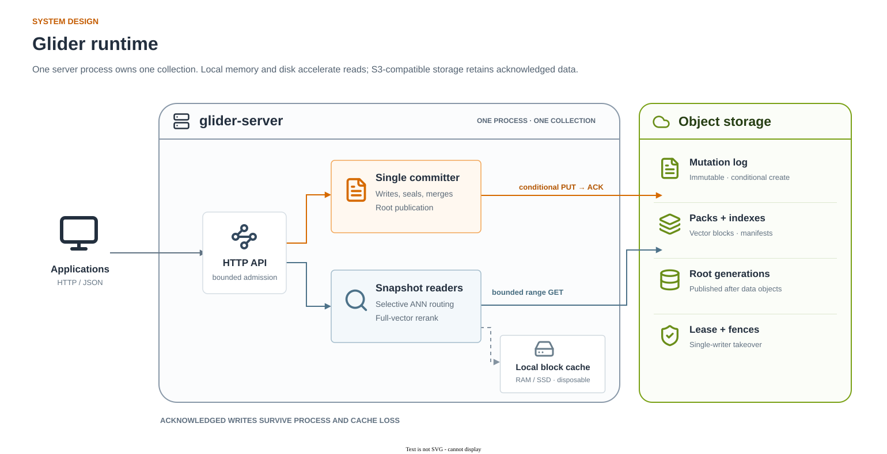

A single-node vector database where S3 is the source of truth.
Glider is an open-source vector database written in Rust. One server process serves one collection over HTTP/JSON; every acknowledged write is durable in object storage, and local RAM and SSD only accelerate reads.
- Crash-safe
- Clustered ANN
- Metadata filters
- MIT OR Apache-2.0
Quickstart
You need Docker and curl; no local Rust toolchain. The image is multi-platform (linux/amd64, linux/arm64). This starts a 3-dimensional collection backed by a local directory; its data is lost when the container stops. Point it at S3 with the configuration variables to keep it.
docker run --rm -p 8080:8080 -e GLIDER_DIMENSIONS=3 \
-e GLIDER_DATA_DIR=/var/lib/glider/data ghcr.io/omerfeyzioglu/glider:1.1.0Write two points, then run a nearest-neighbor query:
curl -sS localhost:8080/v1/write -H 'content-type: application/json' \
-d '{"upsert":[{"id":1,"vector":[0,0,0],"metadata":{"color":"red"}},{"id":2,"vector":[1,1,1]}]}'
curl -sS localhost:8080/v1/query -H 'content-type: application/json' \
-d '{"vector":[1,1,0.9],"k":2,"include_metadata":true}'The write returns a sequence and request_id; the query returns two hits ordered by distance. Other ways to run it (Docker Compose with MinIO, from source, S3 settings) are in the README.
New in 1.1 1.1.0
"exact": trueon/v1/query: a filtered query returns every match, up tok, instead of an approximate subset.POST /v1/points/get: read up to 1000 points by ID in one consistent read.POST /v1/scan: count and page through points that match a filter, which makes delete-by-filter possible.
curl -sS localhost:8080/v1/query -H 'content-type: application/json' \
-d '{"vector":[1,1,0.9],"k":2,"filter":{"color":"red"},"exact":true}'Exact queries and scans read every block of the collection, so they suit small collections, completeness-critical filters and evaluation. See the API reference for limits.
Why Glider
Durable on S3
Every acknowledged write is an immutable log object published with a conditional create. Nothing is overwritten in place, and a local disk never holds the only copy.
Crash-safe takeover
A restarted server waits out the old writer's lease, fences it at the object store and replays the log tail. A paused former owner can never commit again. No operator step after a crash.
Retry-safe writes
Every write carries a request ID; resending it returns the original outcome instead of applying the write twice. That is what you want when an agent retries a tool call after a timeout. Outcomes are retained for 128 commits.
SSD cache
A local block cache fills in the background so warm queries need no remote reads. Losing it does not lose acknowledged writes; it can affect latency and approximate recall until warm again.
Automatic clustering
The server builds a global clustered view (centroids and cluster-contiguous postings) by itself at 250,000 rows and rebuilds it as the collection grows. Unfiltered queries read at most 8 remote ranges and 1 MiB.
Operations included
Prometheus metrics, /v1/status, optional bearer-token auth, and glider-admin for status, backup, restore and clustering.
Agent memory (MCP) New in 1.1
glider-mcp is an MCP server that gives AI agents durable memory backed by Glider, with three tools: remember, recall and forget. A memory is acknowledged only after it is durable in Glider's storage, and writes carry request IDs, so a retried tool call does not store it twice.
Start the server with the embedding model's dimension and the cosine metric (dimension and metric are fixed when a collection is created):
docker run -d --name glider-memory -p 8080:8080 \
-v glider-memory:/var/lib/glider \
-e GLIDER_DIMENSIONS=384 -e GLIDER_METRIC=cosine \
-e GLIDER_DATA_DIR=/var/lib/glider/data \
ghcr.io/omerfeyzioglu/glider:1.1.0Install the client with the MCP extra, then register it. Text is embedded locally with fastembed (default BAAI/bge-small-en-v1.5, 384 dimensions), which needs Python 3.10 or newer.
pip install "glider-client[mcp] @ git+https://github.com/omerfeyzioglu/glider#subdirectory=clients/python"claude mcp add glider -- glider-mcprecall uses exact search, so its cost grows with the number of memories in the collection.
Performance
Measured on AWS S3 Standard from a c7g.2xlarge (8 Graviton3 vCPU, 16 GiB) in eu-central-1, at 1,000,000 vectors of SIFT1M (128 dimensions, squared Euclidean, k=10, 200 queries). The workload loads in 100-row batches, then runs 300 s of four writers each overwriting 100 rows per second and four readers each querying every 100 ms, then restart, cache-loss and backup checks. One run; results vary between runs.
| Measure | Result | Target |
|---|---|---|
| Static recall@10 (mean / p5) | 0.998 / 1.0 | ≥0.90 / ≥0.80 |
| Recall@10 after updates, cold (mean / p5) | 0.963 / 0.8 | ≥0.90 / ≥0.80 |
| Warm unfiltered query p95 | 30.9 ms | ≤50 ms |
| Cold unfiltered query p95 | 58.6 ms | ≤200 ms |
| Filtered (resident 1%) query p95 | 10.6 ms | ≤50 ms |
| Write p95 | 97.6 ms | ≤150 ms |
| Open / reopen | 3.15 / 4.00 s | ≤2 s |
| Peak engine RSS | 257.9 MiB | ≤192 MiB |
The run lost no acknowledged writes and returned equal results after cache loss and after a backup restore. Open time and peak memory miss their targets; see Honest limits. Datasets, seeds, configuration and raw results: benchmarks/M39.md, BENCHMARKS.md and the benchmark summary.
Architecture

- A write batch becomes one immutable log object, created conditionally, before it is acknowledged.
- Idle maintenance seals the log tail into immutable packs of vector-local blocks with compact five-bit sketches, and publishes each new state as a root generation that references per-run manifests.
- The clustered view assigns rows to centroids so a query reads only the nearest clusters' blocks; new seals keep it clustered and small extents are merged in the background.
- Takeover uses a renewed lease to pace restarts and permanent fence objects so that a deposed writer's next publication fails at the store.
See the architecture guide for the AWS deployment pattern and DESIGN.md for formats, invariants and recovery semantics.
Honest limits
- Single node, single writer. No replication, sharding, read replicas or standby. Availability during a restart depends on the writer lease (default 10 s) and the open time.
- Filtered search is approximate by default. Metadata is string-valued; filters support equality, sets, numeric ranges and nested logic. Only the declared resident predicate is exact by default; other filters may return fewer than
kresults unless you useexact: true, which scans every point. - Memory above target at 1M. Peak engine RSS at 1,000,000 vectors is 257.9 MiB on AWS (235.6 MiB on MinIO), above the 192 MiB target.
- Opening a large collection on S3 takes seconds. 3.15 s (4.00 s for a reopen) at 1,000,000 vectors, above the 2 s target.
- TLS via a reverse proxy. The server speaks plain HTTP with an optional static bearer token; terminate TLS at a proxy or load balancer.
- Dimension, metric, resident filter and routed keys are fixed when a collection is created. A point must fit in one 120 KiB storage block.
Python client New in 1.1
A client using only the Python standard library (3.9 or newer). Writes carry a client-generated request ID, and a timed-out write is resolved by ID before it is ever resent, so it is applied at most once.
pip install "git+https://github.com/omerfeyzioglu/glider#subdirectory=clients/python"from glider_client import Client
client = Client("http://localhost:8080") # token="..." if the server requires one
client.upsert([
{"id": 1, "vector": [0, 0, 0], "metadata": {"color": "red"}},
{"id": 2, "vector": [1, 1, 1], "metadata": {"color": "blue"}},
])
for hit in client.query([1, 1, 0.9], k=2, include_metadata=True):
print(hit.id, hit.distance, hit.metadata)
# exact filtered query; every match is returned, up to k
client.query([1, 1, 0.9], k=10, filter={"color": "red"}, exact=True)
client.get(1) # Point, or None if absent
client.delete([1])